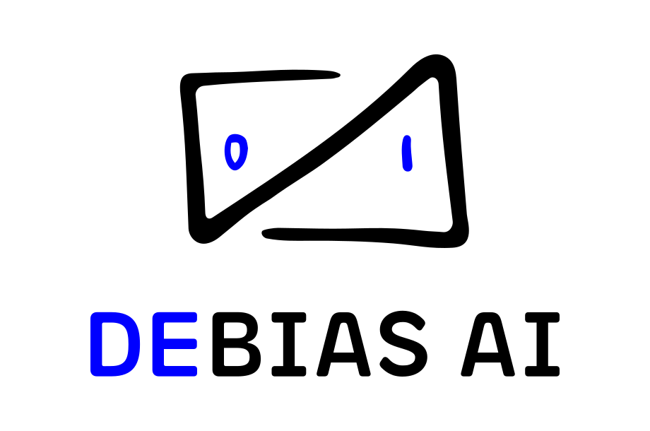

The elusiveness of ethics
Encoding fairness in an unfair world
About me
|  |

|
| debias.ai | ethical-litmus.site |
Slides
Section 1
Desanctifying the charisma of numbers
https://www.tandfonline.com/doi/full/10.1080/17530350.2018.1527710
Descriptive
-vs-
Normative
Girls wear pink
(Descriptive)
Girls wear pink
(Normative)
The way the world is?
or
The way the world should be?
For example...
We make normative assertions all the time
Think of the drone...
Profit vs. Knowledge
-or-
Winning is not the same as understanding
Can a mousetrap be... unethical?
Building ML systems in a capitalist, corporate context:
There is no prediction; only intervention
Classification is never descriptive, always normative
So the moral is...
Predictive models are almost never descriptive when deployed within a capitalist framework
Section 2
Taxonomies of Bias
Drawn from this paper
A Framework for Understanding Unintended Consequences of Machine Learning

Two primary types of harm
- Allocative harms
- Representational harms
A map to plot bias
Is this good training data?
✅ Historical Bias
✅ Historical Bias
Normative statement: a misalignment between the world as it is, and your values or objectives
✅ Historical Bias examples
- Amazon recruitment algorithm
- Google image search: Professional hair / CEO
✅ Mitigating Historical Bias
- Can't manage what we can't measure
- Test for model accuracy & allocation across sub-demographics
- Encode 'positive bias' - think affirmative action, for models
- Counterfactual fairness

Can we capture this data well?
✅ Measurement / Sampling Bias
✅ Representation Bias
✅ Measurement Bias
Problems with choosing, collection, or computing features and labels to use in a prediction problem
✅ Measurement Bias
- Measurement process varies across groups
- Quality of data varies across groups
- Defined classification task is an oversimplification
✅ Measurement Bias examples
✅ Mitigating Measurement Bias
- Review sampling methodologies
- Assess proxy quality
- Synthetic data

Can we form useful inferences from our data?
✅ Aggregation Bias
✅ Evaluation Bias
✅ Aggregation Bias
When a one-size-fit-all model is used for groups with different conditional distributions
✅ Aggregation Bias examples
- Everything in Invisible Women by Caroline Criado Perez
- Skin cancer scanning apps
✅ Mitigating Aggregation Bias
- Consider salient differences in sub-demographics for your model
- Add more detailed classifications
- Identify for whom your model performs well
✅ Evaluation Bias
Occurs when the evaluation and/or benchark data for an algorithm doesn’t represent the target population
✅ Evaluation Bias examples
- Benchmark datasets with insufficient representational data
✅ Mitigating Evaluation Bias
- More representative benchmark datasets
- More granular benchmarks (sub-group evaluation)
- Multiple confidence levels
Can we deploy those inferences effectively?
✅ Deployment Bias
✅ Deployment Bias
A mismatch between the problem a model is intended to solve and the way in which it is actually used.
✅ Deployment Bias examples
✅ Mitigating Deployment Bias
- Involve designers, product managers, security people, and other product disciplines in application design
- Conduct UX research on the use of your tool in the real world
- Externalise model uncertainty
- Design failure & recourse flows (first)
Further reading
A Survey on Bias and Fairness in Machine Learning
Section 3
Final observations
Bias is not one thing
Mitigation techniques require additional disciplines - social sciences & ethics
Bias is not one thing
- First identify
- Then measure
- Finally mitigate
Acknowledging failure
(is inevitable)
"I am an ethical person therefore I build ethical tech"